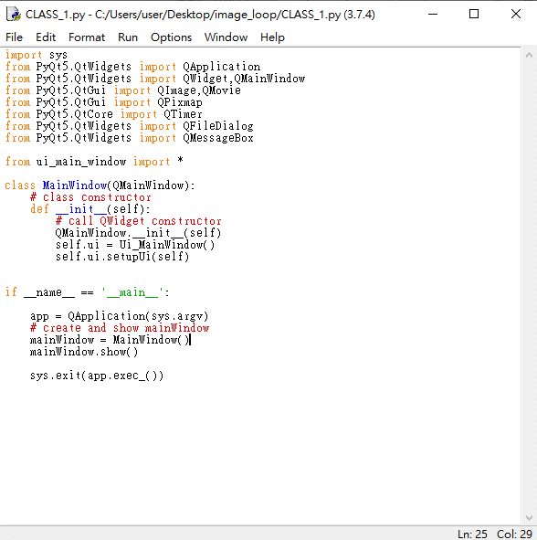

Pyqt5
相關應用教學 結合opencv tensorflow keras..
安裝模組
使用cmd或gitbash輸入指令進行模組安裝pip install PyQt5 PyQt5-tools執行designer.exe
designer 設計
designer.exe 介面設計完成後利用左上角檔案進行存檔 *將儲存成.ui檔案*UI檔案轉換
透過cmd或gitbash輸入指令將.ui檔案轉換為.py *此步驟為了將介面與程式邏輯分離 在轉換前先確定路徑為.ui所在的資料夾*pyuic5 -o ui_main_window.py ui_main_window.uiUI檔案使用
將UI檔案轉換後的py利用另一個的邏輯程式進行呼叫
按鈕控制
將按鈕連結到指定函式加入迴圈
不斷重複執行某個指定程式
整合OpenCV影像讀取
OpenCV 相關模組安裝與教學請參考OpenCV教學使用designer UI設計新增一個300*300大小的label將鏡頭讀取邏輯程式放置於迴圈裡並轉換影像顯示在label上整合Tensorflow Keras影像分類辨識
Tensorflow 相關模組安裝與教學請參考Tensorflow教學引用Tensorflow Keras相關模組將辨識結果顯示